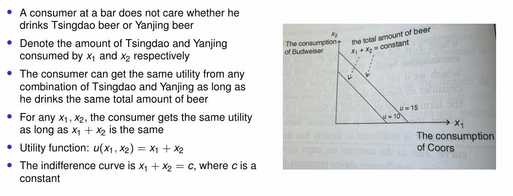
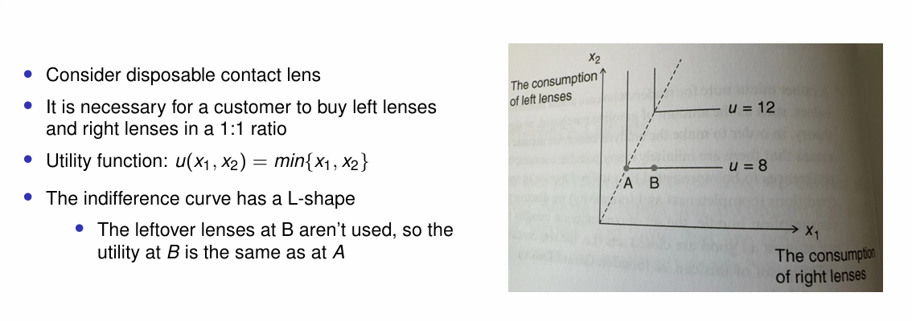
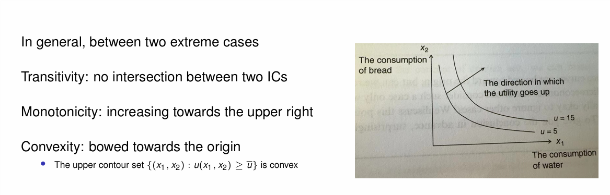
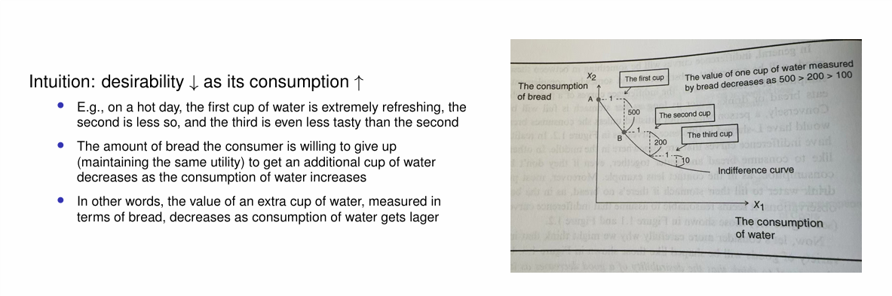
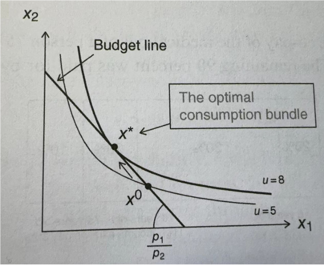
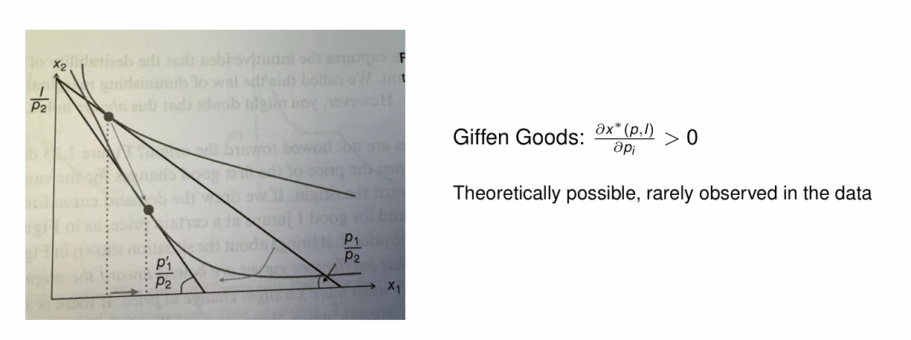
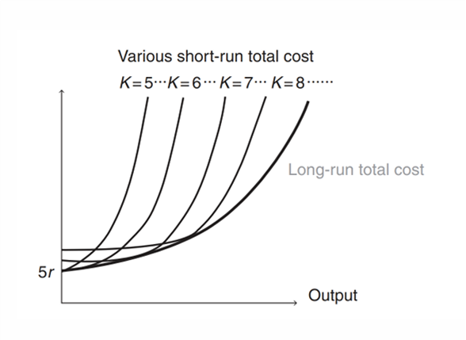
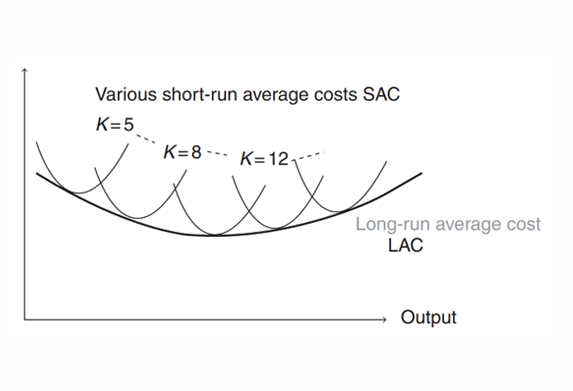
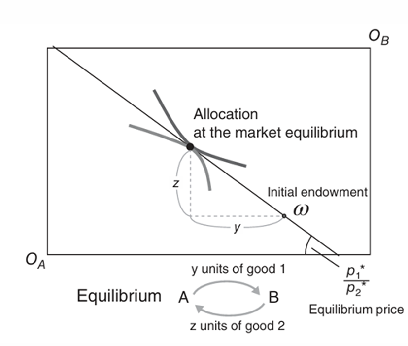

中级微观经济学
写在前面
中微一点儿也不数学！
本笔记偏向语文（雾），写给具备高等数学基础知识的读者，因此不会赘述一些简单的数学知识。这包括：多元函数的偏导、隐函数定理、拉格朗日乘数法、全序集、Zorn 引理。同时本文仅作为笔者临考抱佛脚的复习，不会写过多的动机，之后有空也许会补，见谅。
偏好(preferences)表示一个人在两个选项之间的首选。
- 苏打水比啤酒更受欢迎(is preferred to)：苏打水 \(\succ\) 啤酒
- 苏打水和啤酒一样好(is indifferent to)：苏打水 \(\sim\) 啤酒
- 若两者同时满足，称苏打水不比啤酒差(is weakly preferred to)：苏打水\(\succeq\)啤酒
而后自然是在商品集合 \(X\) 上定义一个人的偏好对应的全序集，由 Zorn 引理我们一定能得到这个人最喜欢的东西。
效用函数(Utility function) \(u:X\rightarrow \mathbb{R}\) 将上述的偏好具象化，对于 \(x,y\in X\)，\(x\succeq y\) 当且仅当 \(u(x)\ge u(y)\)。当然这样的 \(u\) 有无穷多种，我们应当如何选取效用函数呢？
理性行为(Rational behavior)：在一系列负担得起的选择中实现效用最大化的行为。即无论使用哪个效用函数来表示 \(\succeq\)，最理想的选项是相同的。
此时我们就可以将理性行为表述为约束优化问题。将理性应用于消费者行为，我们的目标是推导出需求函数，以描述商品的消费将如何随着价格变化而变化。具体来说，固定总的效用函数 \(u\) 的取值，考虑此时两种（多种）商品消费的多少，这条曲线被称为无差异曲线(indifference curves)下面我们考虑四种情形：

Fig. 1完美替代(perfect substitutes)图 1：完美替代(perfect substitutes)

Fig. 2完美补充(perfect complements)图 2：完美补充(perfect complements)

Fig. 3一般情况图 3：一般情况

Fig. 4凸性图 4：凸性
边际替代率(Marginal rate of substitution)为无差异曲线的斜率。具体而言，消费者愿意放弃的第二种商品的最大数量，以便将第一种商品的消费量增加一个单位，并保持效用固定。记为 \(MRS_{12}\)。
边际替代率递减定律：弓形无差异曲线。
预算限制(budget constraint)就是总价格不超过预算（中微到底在干什么）：\(\sum p_ix_i\le I\)。所谓最佳捆绑消费(the optimal consumption bundle)下图可以看的很清楚。

Fig. 5最佳捆绑消费图 5：最佳捆绑消费
定义商品 \(i\) 的效用：
由微积分里的知识我们有
回忆边际替代率的定义，结合 \(\mathrm{d}u=\frac{\partial u}{\partial x_1}\mathrm{d}x_1+\frac{\partial u}{\partial x_2}\mathrm{d}x_2\)，我们有
显然在最佳捆绑消费时 \(MRS_{12}=\frac{p_1}{p_2}\)，这可以写成
更一般的，我们有
其中 \(\lambda\) 代表收入的边际效用，具体来说，假设消费者选择最优消费捆绑，收入增加 1 时的额外效用金额为 \(\lambda\)，这种效用的增加并不取决于额外收入的用途。
回忆拉格朗日乘数法
中的 \(\lambda\) 恰为上文中定义的收入的边际效用，即
上式称为包络定理(Envelope Theorem)（哦哦牛批这还能取个名字的）。
对于给定的 \((p,I)\)，效用函数在 \(x^*(p,I)\) 处取最值：
\(x^*(p,I)\) 称为需求函数(Demand function)。我们有罗尔恒等式(Roy's identity)：
需求定律(Law of Demand)（这不是废话吗）：对于几乎所有商品，对商品的需求都会随着价格的上涨而减少
例外：

Fig. 6吉芬商品图 6：吉芬商品
补偿需求函数 \(\bar{x}\) 是支出最小化问题的解决方案：
若 \(\frac{\partial \bar{x}_i}{\partial p_j}>0\) 则称商品 \(i\) 和商品 \(j\) 是替代品(substitutes)，若 \(\frac{\partial \bar{x}_i}{\partial p_j}<0\) 则称商品 \(i\) 和商品 \(j\) 是互补品(substitutes)。当 \(N=2\) 时，若 \(\frac{\partial \bar{x}_1}{\partial p_2}=\frac{\partial \bar{x}_2}{\partial p_1}=0\)，则称商品 \(i\) 和商品 \(j\) 是互补品(substitutes)。
Shephard's Lemma：
替代效应(Substitution effects)：价格上涨导致消费者转向类似商品，补偿需求功能提供了衡量“相似性”的工具。
收入效应(Income effects)：价格上涨“有效”减少了消费者的收入，它降低了购买所有商品的能力。
Slutsky 分解(The Slutsky decomposition)将替代效应和收入效应放在一起：
价格弹性(Price elasticity)：价格上涨 1 份时需求减少的份数
当 \({\Delta p} \rightarrow 0\) 时，价格弹性为
需求的交叉价格弹性：
考虑价格变动对收入的影响：
- 收入随价格增加，若 \({\varepsilon }^{D} < 1\)
- 收入不随价格变化，若 \({\varepsilon }^{D} =1\)
- 收入随价格减少，若 \({\varepsilon }^{D} > 1\)
在效用最大化下，补偿需求的价格导数是对称的：
完全竞争假设(Perfect competition assumption)： 如果单个生产者改变其生产，则由市场决定的价格不会改变，因为生产者众多。即在利润最大化问题
中 \(p\) 和 \(w\) 是常数
成本函数(cost function)：\(C(y)\)
AC(Average cost)：\(\frac{C(y)}{y}\)
MC(Marginal cost)：\(C'(y)\)
AVC：广义平均可变成本
Firm behavior 大概就是说一些生产行为需要一定的“启动资金”，抽象废话一堆。
考虑公司使用两个投入生产产出 \(y\)：劳动力 \(L\) 和资本 \(K\)
- 劳动力：短期可调整投入
- 资本：长期可调整投入
长期生产函数：\(y = f(L,K)\)，短期生产函数可以写成 \(y = f(L) = f(L,\bar{K})\)
将输入翻 \(t(>1)\) 倍：
- 恒定规模回报(CRS )：\(y(tL,tK)=ty(L,K)\)，一些重复劳动，如农业生产 ， 纺织 ， 理发店。
- 上升规模回报：\(y(tL,tK)>ty(L,K)\)，理论上不存在，往往表明有隐含成本。
- 下降规模回报：\(y(tL,tK)<ty(L,K)\)，规模提升效率随之提升，如物流、电信、输电，这会导致垄断。
以劳动力和资本为投入的企业利润最大化问题：
同上定义完全竞争假设：无论企业选择什么 \(L\) 和 \(K\)，\(p\)、\(w\)、\(r\) 都是固定不变的参数。
租赁资本假设(Leased capital assumption)
- 一旦购买了机械，就可以多次使用
- 购买价格不适合单期利润最大化
- 假设公司每期都以 \(r\) 率租用资本
由一阶条件我们有
进而
于是我们可以通过比较 \(MRTS_{LK}\) 与 \(\frac{w}{r}\) 的大小来判断如何调整劳动力与资本以获得最高利润。而 \(MRTS_{LK}=\frac{w}{r}\) 的 \(F\) 当然是下最优化问题的解：
长期总成本(LTC)曲线为所有短期成本曲线的包络

Fig. 7LTC 曲线图 7：LTC 曲线
长期平均成本(LAC)曲线为所有短期平均成本成本曲线的包络

Fig. 8LAC 曲线图 8：LAC 曲线
考虑多个输入、输出的情形，对于生产计划 \(y\)，利润可以写成
这里 \(y_k\) 的正负由它是输入还是输出决定。记号变为(抽象废话)
该问题最优解记为 \(y^*(p)\)。
供给定律(Law of Supply)： 供给曲线必然向上倾斜。如果一种产出的价格上涨，那么该产出的产量要么增加，要么保持不变。
市场需求是所有个体需求曲线的横向总和：
市场供给是所有单独供给曲线的水平总和：
消费者剩余(CS)：消费者从市场交易中获得的利益（以美元计）。
个人需求：个人可以购买多件商品，且对不同数量商品有对应的的支付意愿（WTP），如果 \(WTP>p\)，则购买之。此时 \(CS=\text{所有交易的} (WTP-p) \text{总和}\)。另一种解释：每个人最多只能购买一种商品，每个人的 WTP 是不同的，需求者按 WTP 从高到低的顺序排列，如果 \(WTP>p\)，则购买，此时 \(CS=\text{所有参与交易的个人的}(WTP-p)\text{之和}\)。若购买量是连续的，则将求和改为积分即可。
上段分析的漏洞在于需求并不能衡量 WTP，且忽略了收入效应带来的效用变化。
准线性效用 CS 可准确衡量消费者从市场交易中获得的利益：
其中 \(Q\) 代表消耗的可乐升数，\(m\) 代表优化消费其他商品的剩余资金，\(U(Q)\) 代表消费 \(Q\) 升可乐的效用，\(U(Q)'' < 0\)，此时我们通常假设有足够的收入，以排除边界解。
在准线性效用条件下，收入效应为零。
准线性效用下的最优消费
需求代表相关商品的边际效用 \(U'(Q)\)。\(U'(Q)\)衡量消费者对额外一升可乐的 WTP：
此时 WTP 体现为在效用固定的情况下，消费者愿意为多买一单位可乐而放弃的最大数量。如果当前消费水平下 \(U'(Q)= 2\) 美元，那么如果消费者再喝一罐可乐，她的收入就会增加 2 美元。
局部均衡侧重于一个市场，但往往存在跨市场的溢出效应。一种商品的价格上涨不仅会影响其自身的消费，还会影响其替代品和互补品的市场。一般均衡将生产所有商品的所有企业和所有消费者整合到一个模型中，这里的商品既可以是其他企业的投入品，也可以是消费者的最终产品，消费者也可以是生产的劳动力投入者。
考虑如下模型：商品 \(n = 1,2,\cdots,N\)，价格 \(p = (p_1,\cdots ,p_N)\)，企业 \(j = 1,2,\cdots ,J\)，生产计划：\(y^j = (y^j_1,y^j_2,\cdots ,y^j_N)\)，这里如果 \(n\) 是产出，则 \(y^j_n > 0\)，否则 \(y^j_n < 0\) ，生产可能性集 \(Y^j\)：所有可行的生产计划。此时利润最大化问题转化为
公司 \(j\) 的最优生产计划记作 \(y^j(p)\)。
现有消费者 \(i = 1,2,\cdots ,I\)，商品初始储量 \(w^i = (w^i_1,\cdots,w^i_N)\)，企业 \(j\) 的利润分配给家庭 \(i\) \(\theta_{ij}\) 份， \(\sum_i \theta_{ij} = 1\)， 捆绑消费组合 \(x^i = (x^i_1,\cdots,x^i_N)\)，则预算约束为
效用最大化问题转化为：
消费者 \(i\) 的最佳捆绑消费组合记作 \(x^i(p)\)。
于是整个经济系统可以被描述为
经济均衡包括一组关于价格 \(p\) 与资源分配 \(x^i(p),y^j(p)\)，使得：
-
给定价格 \(p\)，\(x^i(p)\) 解决消费者 \(i\) 的效用最大化问题。
-
给定价格 \(p\)，\(y^j(p)\) 解决生产者 \(j\) 的利润最大化问题。
-
\(p\) 平衡市场需求和市场供给
\[ \sum_i x^i_n(p)=\sum_j y^j_n(p)+\sum_i w^i_n \text{ for }n=1,2,\cdots,N \]或者
\[ x_n(p)=y_n(p)+w_n \]
那么这样的均衡一定存在吗？考虑超额需求函数
\(z_n>0\) 表示供不应求，反之为供过于求。
Walras's Law：对所有价格 \(p\) 与超额需求函数 \(z_n(p)\)，我们有 \(pz_n(p)=0\)。
当所有价格都是正数时（没有商品是“免费”的），该定律意味着：一个市场的需求过剩意味着另一个市场的供给过剩；如果 \(N\) 个市场中的 \(N -1\) 个处于均衡状态，那么剩下的市场也一定处于均衡状态。
由 Brouwer 不动点定理，当 \(z_n(p)\) 关于 \(p\) 连续时，经济均衡一定存在。具体证明不赘述。
Pareto 改进：不损害任何人，但至少使一人受益。
Pareto 效率：没有 Pareto 改进。
考虑两个消费者与两种商品组成的市场经济，可以遇见的，处于市场均衡状态时，两者的无差别曲线相切。

Fig. 9市场均衡图 9：市场均衡
福利经济学第一基本定理：完全竞争市场均衡总是在满足如下条件下实现资源的 Pareto 效率配置。条件： 每个消费者都有一种商品，其消费可以连续变化，而且消费的增加会增加效用（局部非饱和）。
福利经济学第二基本定理： 任何具有 Pareto 效率的资源配置都可以通过完全竞争的市场均衡来实现，在某些条件下，通过使用一次总付税和一次总付补贴来重新分配收入，可以实现完全竞争的市场均衡。条件：在其他技术条件中，主要条件有每个消费者的无差异曲线都向原点弯曲，每个企业的生产可能性集都是凸的。
称分配 \(a=(x^1,\cdots,x^I,y^1,\cdots,y^J)\) 是可行的，若对任意 \(i,j\) 都有
称从一种可行的分配 \(a\) 转移到另一种分配 \(\bar{a}\) 是一种Pareto 改进，如果 \(u(\bar{x}^i)\ge u(x^i),\forall i\) 且 \(u(\bar{x}^i)>u(x^i),\exists i\)。
称一种分配 \(a\) 是Pareto 效率的，若 \(a\) 是可行的且没有 Pareto 改进。
效率条件：对任意 Pareto 效率，存在 \(p_1,\cdots,p_k\) 满足：
-
对任意消费者 \(i\) 与商品 \(a,b\)：
\[ MRS_{ab}^i=\frac{p_a}{p_b} \] -
对将商品 \(h\) 加工为 \(k\) 的工厂 \(j\) ：
\[ p_k\frac{\partial F^j}{\partial x_h}=p_h \]
这里 \(p_1,\cdots,p_k\) 称为影子价格。可以推得如下结论：对生产商品 \(a\) 的工厂 \(\alpha\) 与生产商品 \(b\) 的工厂 \(\beta\)，均使用同样的输入商品 \(h\)，有
这里 \(MRT_{ab}\) 称为边际转化率。
在完全竞争条件下，企业是“价格接受者”。实际上，大多数市场都处于不完全竞争状态，少数企业可以掌握定价（市场）权力。垄断是指市场上只有一家生产商，垄断企业可以通过改变其产出水平来影响市场价格，可以预测垄断者会做什么，只需优化即可。 寡头垄断描述的是企业数量较少的不完全竞争市场，优化不足以预测企业在寡头垄断中的行为。需要博弈论来预测会发生什么。总的来说，市场结构决定商品供应。
在完全竞争市场中，单个企业面临一条水平的需求曲线。如果单个企业将其价格提高到高于当时的市场水平，则需求降至零；当单个企业将其价格降低到现行市场水平以下时，需求扩大到无穷大。原因在于存在无数个相互竞争的生产者和无数个消费者。
而垄断企业面临一条向下倾斜的需求曲线，要生产更多的产品并在市场上销售，就必须降低价格。垄断者只能收取单一价格（我们假设为单一价格）。降低的价格适用于边际消费者和次边际消费者。垄断者可以通过选择产量 \(Q\) 来决定市场价格 \(P\)。
当利润最大化时，\(MR(Q)=MC(Q)\)。在完全竞争市场中，\(MR(Q)=P\)，与 \(Q\) 无关。而对于垄断者而言，
垄断者通过需求弹性定价
垄断市场与完全竞争市场相比产出较低，价格较高，且不平等： 生产者获得更多利润，而消费者剩余较少。固定成本巨大的行业更有可能是垄断行业，固定成本过高的市场被称为自然垄断市场，例如电力公司。建造水电站大坝或核反应堆的固定成本巨大。监管平衡了技术效率与市场支配力之间的权衡。一种解决方案是允许垄断，但实行价格监管。
博弈论：一种考虑如何预测他人的信念并进而预测其决定的理论。
同时决策：每个人同时做出决定，且做决定时不观察对手的决定。
博弈：玩家 \(i=1,\cdots,N\) 为博弈的参与者，决策 \(a_i\in A_i\) 根据游戏中迄今为止发生的情况制定的行动计划，回报 \(g_i(a_1,\cdots,a_N)\)。
纳什均衡是博弈中最常见、最基本的解法：对决策 \(a=(a_1,\cdots,a_N)\)，玩家 \(i\) 对决策 \(a^*=(a^*_1,\cdots,a^*_n)\) 的单方面偏离是
一个决策 \(a^*\) 是纳什均衡的若对任意 \(i\) 与 \(a_i\)，
最佳决策：从信念到决策的映射，通过最优化问题得到：
纳什均衡有两个假设条件：
- 理性：给定信念的最佳反应
- 一致性：信念与实际行动一致
一个人效用函数的曲率体现了他对风险的看法。
纳什均衡的存在性：对于任何具有有限数量博弈者的博弈，每个博弈者都有有限数量的纯策略，则存在一个纳什均衡（可能是混合策略均衡）。
PDF 原文
若下方预览无法显示，可直接打开原文件或下载后阅读。
评论